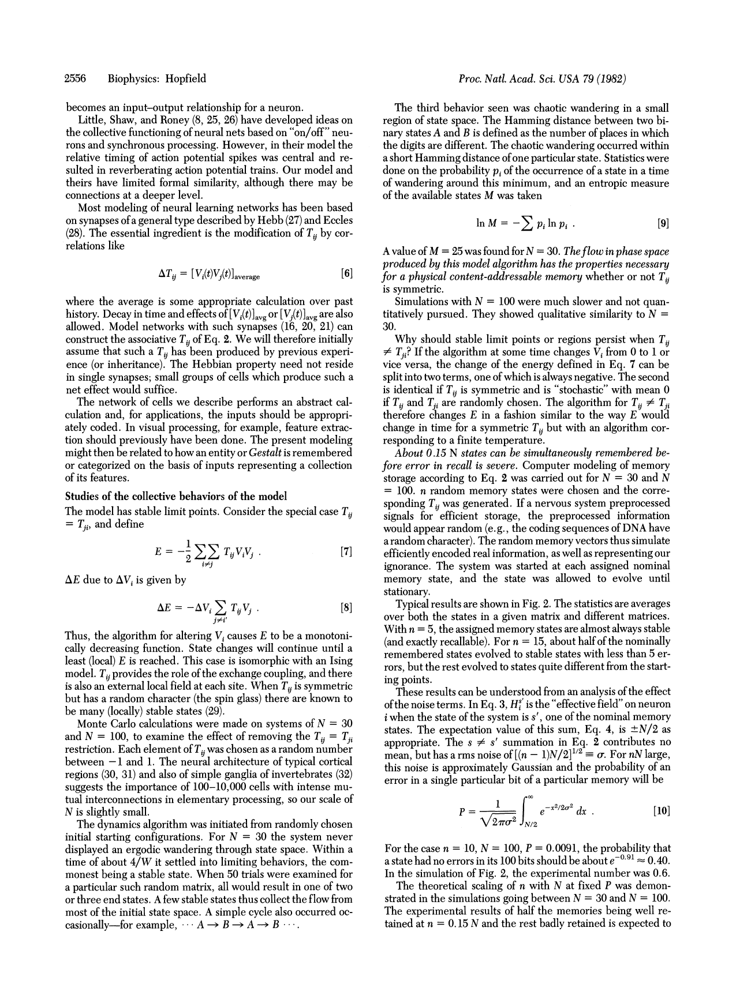
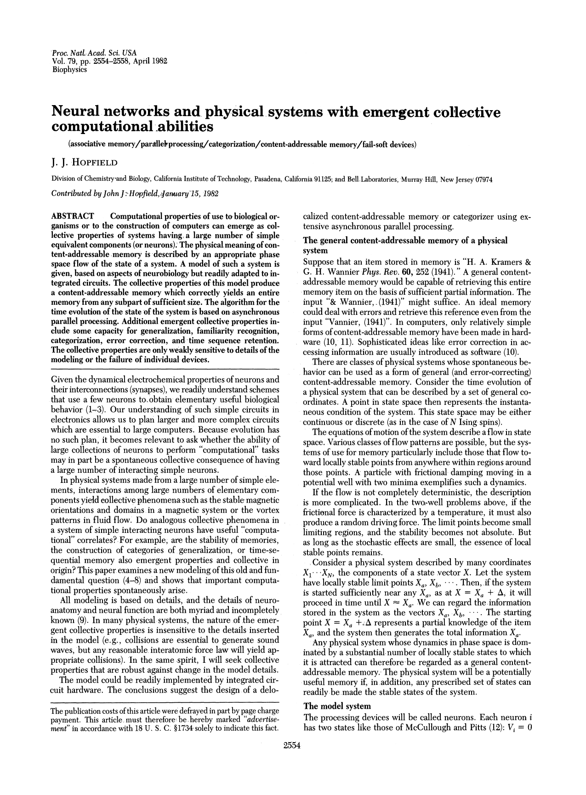
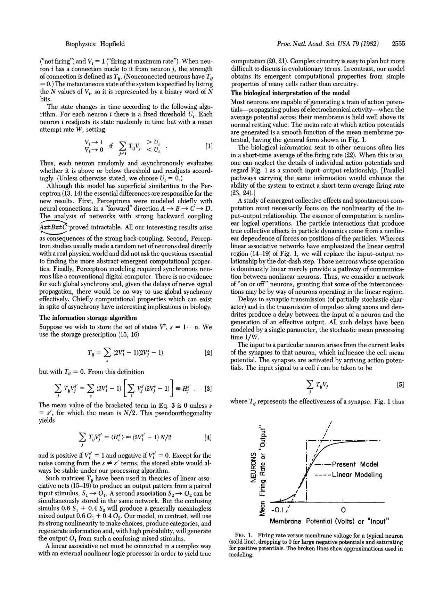
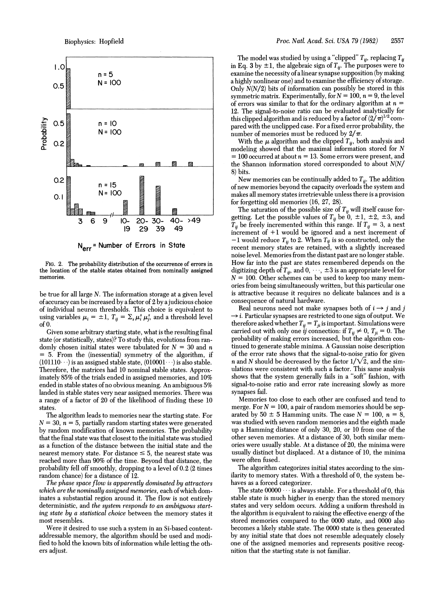
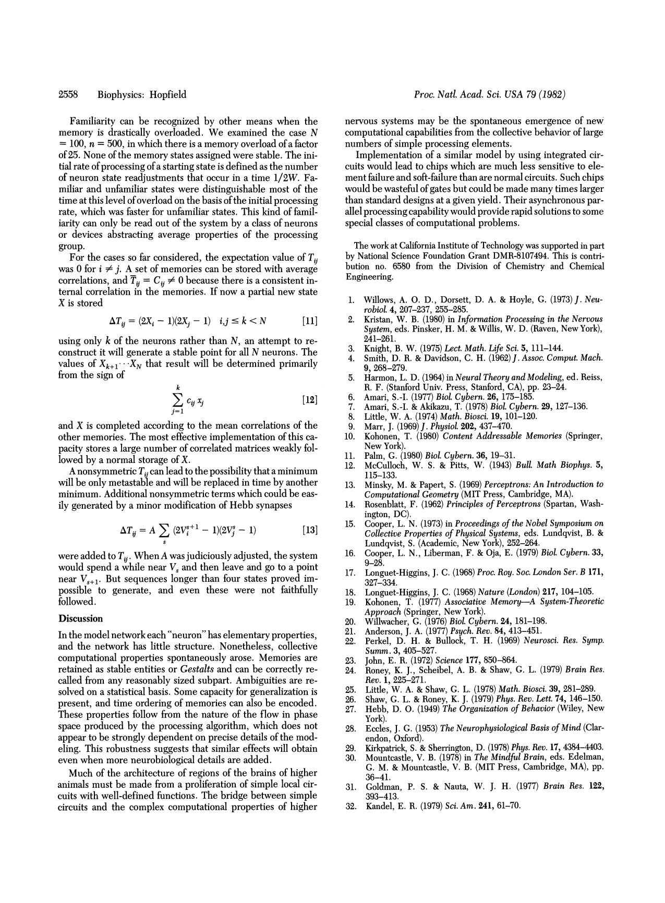

Proc. Natl. Acad. Sci. USA · Vol. 79 · pp. 2554–2558 · Biophysics
APR 15 1982
The paper that remembers itself
Rub out a printed equation with your cursor — and watch it heal itself,
pulled back into place by the very equation printed on the page.
J. J. Hopfield, 1982 — 44 years old, and
the network it defines won the 2024 Nobel Prize in Physics. Four of its
printed equations are stored as memories in that very network; every pixel
of ink is a neuron.

the four boxed equations are stored memories — smudge one with your cursor
This is the paper, not an animation of it: storage is prescription [2],
the dynamics is rule [1], and the number in the instrument is E of
equation [7] — which rule [1] can only ever push downhill.
In 2020 this update rule
was shown to be exactly transformer attention: the memory you just
smudged is an ancestor of the mechanism inside every large language model.
Honest limits — what this does and doesn't show
Each equation is one stored pattern in its own network. Recovery is easy because it is the only memory there — this shows recall, not capacity. The real limit (Hopfield's ~0.15N) lives in the Fig. 2 bench below.
Damage past half heals to the photographic negative — an equally deep minimum, not the original. At exactly half it's a coin toss.
Store all four in one network and they merge — p. 2557 warns of exactly this; we tried, they do. Hence one net each.
This is the discrete 1982 model with pixels as neurons — a faithful but didactic mapping, not a claim about how brains or LLMs store text.
The full paper — five pages, PNAS, April 1982



RE-RUN FIG. 2 — THE RECALL-ERROR HISTOGRAM
This reproduces Fig. 2 above — how many bits come back
wrong when you overload the memory. (Fig. 1, on p. 2555, is the neuron
input-output curve; not this.) N = 100 neurons, n
random memories, each relaxed by rule [1]. Push n past ~15 and
recall falls apart, exactly as the paper found.

INSTRUMENT — EQ [7], COMPUTED LIVE
E = −½ ΣΣ Tij μi μj— in the μ = ±1 variables of p. 2557
selected memory: [7]
—
the hill is E [7]; the dot is your print. Rule [1] steps it downhill to a bottom — the equation, or its negative.
loading the print…
damage it by dragging your cursor across the print